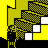
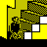
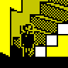
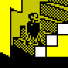
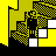

The jumping sound effect is not as it should be, because of an erroneous CALL
instruction in the routine at EAEB.
POKE 60149,254
One-two one-two
Usually, when a character is walking he will cycle through walking animation
phases 1, 2, 3 and 4. So, for example, when MR WITHIT is walking leftwards, his
animatory states will progress thus (reading from right to left):
However, when a character is looking for ERIC and walking leftwards, he will
cycle through walking animation phases 1 and 2 only, or phases 3 and 4
only. For example, when MR WITHIT has left the Map Room to hunt down the truant
ERIC, his animatory states cycle thus (through phases 1 and 2) as he makes his
way leftwards across the bottom floor:
And when MR WITHIT has left the White Room to hunt down the truant ERIC, his
animatory states cycle thus (through phases 3 and 4) as he makes his way
leftwards across the bottom floor:
The reason for this shortened cycle of walking animation phases is the lack of
symmetry between the routine at 7BFB (which is responsible for moving ERIC's
chaser from the midstride position) and the routine at 7C18 (which is
responsible for moving ERIC's chaser to the midstride position). The routine at
7BFB decrements the animatory state if the chaser is moving leftwards, and
increments it if he's moving rightwards. However, the routine at 7C18 always
increments the animatory state, regardless of the chaser's direction of
travel. Thus the chaser's walking animation phases get locked into a 1-2-1-2 or
3-4-3-4 cycle if he's moving leftwards.
Usually, when a character is going up a staircase he will cycle through walking
animation phases 1, 2, 3 and 4 thus:





However, because of a bug in the routine at 65E4, when ERIC is going up a
staircase he cycles through walking animation phases 1, 4, 3 and 4 instead
thus:
ERIC can be knocked out by BOY WANDER's catapult pellet even when he's sitting
on the floor or is already lying on the floor (and the pellet should really fly
straight over his head instead). The best way to reproduce this bug is to stand
(or sit) in BOY WANDER's line of fire in a classroom while everyone's waiting
for the teacher to show up for the lesson.
All play and no work
In lesson 0xE3 (MR ROCKITT - EXAM ROOM), little boys 4-8 head off to the
White Room in accordance with their personal timetables, but no teacher ever
arrives to start the lesson.
Before wiping the board and getting a lesson under way, ERIC's teacher will
wait for EINSTEIN to sit down first: see 7CD0. This makes sense at the
beginning of a lesson, but that same routine is called several times during the
course of a lesson (see F300) to check whether ERIC is present, which means
that the teacher will also stop whatever he's doing and wait for EINSTEIN to
sit down before continuing on those occasions too. This is not really
noticeable except during lessons where there is no question-and-answer session
taking place between the teacher and the swot, and the teacher is pacing up and
down in front of the blackboard instead. During those lessons, the call to
7CD0 is made each time the teacher has reached the point where he is just
about to turn round; if EINSTEIN is not sitting in a chair at that time
(because ERIC has pushed him out of his seat, for example), the teacher will
wait until EINSTEIN is back in his seat before turning round.
This phenomenon can be made more readily reproducible and observable by using
the following POKEs:
POKE 27736,20 (to lengthen the delay before a dethroned character
rises)
POKE 62423,0 (to make every lesson a non-question-and-answer
lesson)
Wrong command list
Many command lists use the routine at 7C47 to trigger a
restart. This works as expected when the current lesson appears in the
main timetable, but does not work during the 'special' playtimes -
0xF3, 0xF4 and 0xF5 - which do not appear in the main
timetable, but instead replace main timetable playtimes at random three times
out of eight on average (see 6E33).
The problem is that the routine at 7C47 looks up the current lesson (whose
number is stored at 7FF9) in the main timetable in order to find out which
command list to restart, and then copies the start address of that command list
into bytes 0x77 and 0x78 of the character's buffer, overwriting the command
list start address that was already there.
The most noticeable effect of this bug will occur during a special playtime
that has replaced a 'stampede' playtime (0xFC or 0xFD). Little boys
1-9 and 11 (not 10, because he's busy looking for ERIC to tell him what's going
on) start with command list 196 (walkabout), but when the restart
command is reached, will switch to command list 0xCC (stampede
leader) or 0xCE (stampede follower). Thus a special playtime in which
ERIC must watch out for ANGELFACE, BOY WANDER or EINSTEIN is complicated by the
presence of stampeding boys tripping everyone up.
If ERIC has exactly 10000 lines, MR WACKER will come rushing to ERIC's side and
say "YOU HAVE OVER 10000 LINES TO WRITE ERIC..." (see F9BB). Does the
headmaster not know how to count, or does he actually think that 10000 > 10000?
Either way, this is poor form for a maths teacher.
POKE 63943,233 (keeps MR WACKER at bay until ERIC's lines total
exceeds 10000)
Avoiding expulsion
By using the undeliverable message technique, it is
possible to avoid being sent home by MR ROCKITT (when ERIC has mumps) or MR
WACKER (when ERIC has 10000 or more lines).
If MR ROCKITT is on his way to send ERIC home, head for the nearest blackboard
and press 'W' to start writing. Then wait. And wait some more. And wait some
more on top of that. After about 20 minutes, the bell will ring, at which point
it will be safe for ERIC to stop writing (press ENTER). MR ROCKITT will walk
away, having apparently forgotten all about ERIC's disease.
Likewise with MR WACKER. After the bell rings, press ENTER to finish writing on
the board and MR WACKER will walk away, having lost interest in sending ERIC
home. However, ERIC must proceed with care: the next time he gets lines, MR
WACKER will come looking for him again.
Immunity through velocity
When ANGELFACE has mumps, ERIC may be able to run past him without 'touching'
him, and thus avoid contracting the disease.
This trick is possible because the collision detection code at FA2A is
executed only during ANGELFACE's turn to move; ERIC moves faster than any other
character in the game, and so if he times it right, he can scoot past the bully
in between his turns to move.
MR ROCKITT as a boy
In lesson 0xE5 (REVISION LIBRARY), MR ROCKITT paces up and down in the
Exam Room like a little boy, waiting for a teacher who never arrives.
POKE 42213,188 (sends MR ROCKITT to the staff room)
Speech bubble v. shield
When a speech bubble is obscuring a shield, ERIC cannot get it by jumping up to
it or firing at it. This is because the routine at 6DEF checks for the
presence of a shield at the location of ERIC's hand or pellet by inspecting the
attribute byte: a shield is assumed to be present only if neither the PAPER nor
the INK is black. However, when a speech bubble is in the way, the INK is
black, and the routine exits early.
Corrupted speech bubbles
Speech bubbles are vulnerable to corruption by the movement of characters or
catapult pellets in front of them. The easiest way to see this is to climb the
stairs that lead up to the head's study when a teacher is standing at the
doorway of the White Room telling the kids to sit down. (This bug was fixed in
Back to Skool by ensuring that characters, pellets, etc. are always drawn
behind speech bubbles instead of in front of them.)
Speech queue hogs
ERIC's teacher and EINSTEIN can hog the 'speech queue' for several rounds of a
question-and-answer session, making the other teachers wait a long time -
sometimes until after the bell has rung - before they can tell the kids to sit
down or what to do during the lesson.
The reason this can happen is that there actually is no speech queue. That is,
there is no mechanism for recording whose 'turn' it is to speak next.
Consider the case where ERIC is being taught by MR CREAK in the White Room, and
MR ROCKITT is teaching in the Exam Room:
MR CREAK is asking a question
EINSTEIN is waiting for MR CREAK to finish speaking
MR ROCKITT is standing at the blackboard, waiting to tell the kids what to
do
When MR CREAK finishes speaking, the character-moving routine at 6226
considers moving the following characters (after MR CREAK) in this order:
BOY WANDER
ANGELFACE
EINSTEIN
A character will be moved if bit 7 of byte 0x7A of his buffer is reset (which
is true for kids half the time on average, and true for teachers only when
they're running), or if byte 0x7B of his buffer (which is decremented on each
pass through the character-moving routine) holds an even number. If either of
these is true for EINSTEIN, he will get to speak next. When he's finished
answering MR CREAK's question, the character-moving routine considers moving
the following characters (after EINSTEIN) in this order:
little boys
MR WACKER
MR ROCKITT
MR WITHIT
MR CREAK
If, on MR ROCKITT's turn, byte 0x7B of his buffer holds an odd number, he will
not be moved, and will therefore not start speaking before MR CREAK. If, on MR
CREAK's turn, byte 0x7B of his buffer holds an even number, he will be moved
and therefore start speaking before MR ROCKITT's next turn.
Thus MR ROCKITT could spend quite a while waiting at the blackboard before
telling the kids what to do, all depending on the contents of byte 0x7B of
his, MR CREAK's and EINSTEIN's buffers (and also bit 7 of byte 0x7A of
EINSTEIN's buffer) on their turns to be moved.
Inaccessible back seat
Kids are unable to sit in the back seat in the Reading Room (see 6BF0). This
may actually be a feature, though, because if EINSTEIN sits in the back seat,
his speech bubble goes through the wall into the Map Room.
The blackboard buffers are wiped before a new game (or demo mode) starts, but
the blackboards themselves are not. Thus BOY WANDER, who would normally write
only on a clean board, will unwittingly scrawl over a blackboard's previous
contents at the start of a new game. (This bug was fixed in Back to Skool.)
Misspelt element
'Phosphorous' (at E0BC) is misspelt; it should be 'Phosphorus'.
MR CREAK and the empty class
Lesson 0xE6 (REVISION LIBRARY) has MR CREAK teaching an empty class in
the Reading Room.
If ERIC hits a character who is sitting on a chair, and then quickly sits in
the chair just vacated, ERIC will not be pushed out of the chair when the
character rises and takes his seat again.
800 lines BOY WANDER - NOW WHERE ARE YOU?
In lesson 0xEC (MR WACKER - WHITE ROOM), BOY WANDER is in the Revision
Library (on his own, as it happens). However, if EINSTEIN tells on BOY WANDER
for writing on the board, MR WACKER will still give lines to the absent
tearaway. (Perhaps the ceiling in the White Room conducts sound well enough for
BOY WANDER to hear the admonition.) The same thing may also happen in lesson
0xED (MR WITHIT - WHITE ROOM), when BOY WANDER is once again in the
Revision Library (this time accompanied by ANGELFACE).